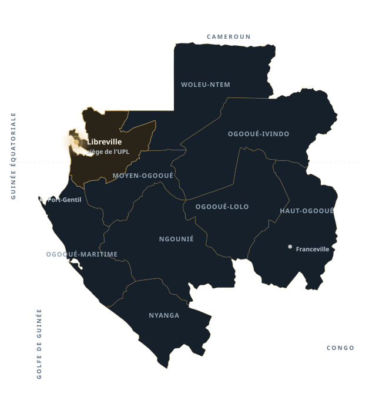

La gouvernance augmentée des établissements privés d'enseignement supérieur au Gabon
Articulation entre intelligence artificielle et intelligence émotionnelle au service de la performance globale, de la responsabilité sociétale et du développement durable, en situation de polycrise. Titre indicatif — plan général harmonisé, septembre 2026.
en administration
des affaires
Chapitres 5 et 6 préparatoires : aucun résultat n'est présumé dans ce diaporama.
Neuf provinces, un secteur privé d'enseignement supérieur à gouvernance contrainte
- Cinq établissements enquêtés, présentés sous les codes EPES-A à EPES-E : régime de confidentialité appliqué à la version publique.
- Un ancrage institutionnel : l'UPL, siège à la Sablière (Libreville) — Executive MBA ouvert depuis 2022, cours du soir de 17 h à 21 h, appui académique de l'Université de Douala.
- Un secteur sous contraintes : cadre juridique et institutionnel, modèles économiques adossés aux droits de scolarité, parties prenantes aux attentes divergentes (chapitre 1).
Le terrain gabonais n'est pas un décor : il fixe les contraintes de gouvernance que la thèse prend pour objet (chapitre 1), distinctes de la justification du choix des cas (section 4.3).

La polycrise n'est pas une somme de crises : c'est un problème transversal de gouvernance
Financière
Viabilité économique, dépendance aux droits de scolarité, échéanciers, trésorerie.
Académique
Qualité des enseignements, encadrement, ressources documentaires, accréditations.
Humaine et sociale
Charge des équipes, compétences, climat interne, attentes des étudiants et des familles.
Institutionnelle
Agréments, contrôles des tutelles, fiscalité et obligations sociales, concurrence locale.
Effets de cascade
Un incident de trésorerie dégrade la qualité perçue ; une tension sociale dégrade la réputation ; une exigence réglementaire nouvelle déplace l'arbitrage budgétaire. Les crises s'entretiennent.
- Conséquence méthodologique : observer des séquences décisionnelles, pas seulement des états.
- Conséquence théorique : les modèles classiques de gouvernance supposent une incertitude bornée.
- Conséquence managériale : la décision devient un arbitrage entre exigences incommensurables.
Un problème managérial réel, un angle scientifique encore peu investi
Problème managérial
Les dirigeants d'EPES arbitrent en continu entre viabilité économique, qualité académique, attentes des parties prenantes, responsabilité sociétale et durabilité — sans commune mesure unique entre ces exigences.
- Les outils numériques produisent des informations, mais ne tranchent pas l'arbitrage.
- La dimension humaine de la décision (relation, confiance, régulation des tensions) reste peu outillée.
- L'investissement technologique est parfois plus rapide que la capacité collective à s'en servir.
Problème scientifique
La littérature traite séparément la gouvernance, l'intelligence artificielle, l'intelligence émotionnelle et la performance durable. Leur articulation est peu documentée, particulièrement en contexte africain et dans l'enseignement supérieur privé.
- Lacune théorique : l'articulation IA–IE n'est pas modélisée comme un processus.
- Lacune contextuelle : les EPES gabonais sont peu étudiés comme cas de gouvernance.
- Lacune méthodologique : peu d'études multi-cas longitudinales sur les scènes de décision.
Une seule question, formulée à l'identique dans les six chapitres
« Comment et sous quelles conditions l'articulation entre l'intelligence artificielle et l'intelligence émotionnelle transforme-t-elle la gouvernance des EPES gabonais en situation de polycrise, et quels effets produit-elle sur leur performance globale, leur RSE et leur contribution au développement durable ? »
« Comment »
Un processus à décrire : les scènes de préparation, de délibération, de décision et de suivi.
« Sous quelles conditions »
Des conditions organisationnelles et institutionnelles à identifier, non des effets supposés acquis.
« Quels effets »
Des effets à documenter, favorables, défavorables ou non établis.
Quatre questions spécifiques, quatre objets d'enquête
Gouvernance en polycrise
Comprendre comment les EPES gouvernent en situation de polycrise : arbitrages, instances, pratiques.
Usages de l'IA
Caractériser les usages réels de l'intelligence artificielle dans les décisions de gouvernance.
Rôle de l'IE
Examiner le rôle de l'intelligence émotionnelle dans le jugement et l'action collective.
Articulation et effets
Analyser les conditions et les effets de leur articulation éventuelle.
Ce que le protocole ne fait pas
Aucune question ne présuppose que l'IA améliore la gouvernance, ni que l'IE soit le facteur déterminant. Une absence d'articulation — ou une articulation limitée — est une issue possible et analysable.
Un objectif général, quatre objectifs spécifiques alignés sur les questions
Objectif général
Comprendre comment et sous quelles conditions l'articulation entre intelligence artificielle et intelligence émotionnelle transforme la gouvernance des EPES gabonais en situation de polycrise, et quels effets en résultent sur la performance globale, la RSE et le développement durable.
Objectif de compréhension, non de démonstration d'efficacité : le design est qualitatif et abductif.
| Objectif spécifique | Question |
|---|---|
| Comprendre la gouvernance des EPES en situation de polycrise | QR1 |
| Caractériser les usages de l'intelligence artificielle | QR2 |
| Examiner le rôle de l'intelligence émotionnelle | QR3 |
| Analyser les conditions et les effets de leur articulation | QR4 |
Intérêts scientifique, managérial et sociétal : annoncés comme des contributions recherchées, jamais comme des apports déjà démontrés (introduction § 1.6).
Quatre courants mobilisés, une intersection à construire
1 · Gouvernance organisationnelle et universitaire
Registres collégial et managérial, spécificités de l'établissement d'enseignement, limites des modèles classiques face à l'incertitude (§ 2.2–2.3).
2 · Intelligence artificielle et décision
Contributions, conditions d'usage, limites et risques ; distinction stricte avec la numérisation, l'automatisation et l'analyse de données (§ 2.5).
3 · Intelligence émotionnelle et leadership
Modèles, apports et limites : perception, régulation, relations, gestion des tensions dans le jugement (§ 2.6).
4 · Performance globale, RSE, durabilité
Dimensions économiques, académiques, humaines, sociales, environnementales ; arbitrages et limites de l'évaluation (§ 2.8–2.9).
Le point d'intersection — et la lacune
Les travaux sur la complémentarité IA–IE (§ 2.7) restent prescriptifs et rarement situés. Aucun cadre ne décrit l'articulation comme un processus de gouvernance observable dans un établissement, a fortiori en contexte gabonais. C'est cette lacune que la recherche investit.
Le modèle exploratoire : une configuration de processus, pas un outil
Modèle exploratoire : construit avant l'enquête, il ne représente aucune relation comme démontrée. Sa révision relève du chapitre 6 ; sa confrontation empirique, du chapitre 5.
Sept propositions, formulées pour être confrontées — et possiblement contredites
| Code | Proposition | Mécanisme attendu |
|---|---|---|
| P1 | Polycrise et transformation des pratiques de gouvernance | La polycrise reconfigure les arbitrages et les instances |
| P2 | Contribution conditionnelle de l'intelligence artificielle | Détection, anticipation, lecture des signaux |
| P3 | Contribution de l'intelligence émotionnelle au jugement et à l'action collective | Interprétation, coordination, régulation des tensions |
| P4 | Orchestration IA–IE et émergence de la gouvernance augmentée | Délibération, arbitrage éthique, suivi et apprentissage |
| P5 | Gouvernance augmentée et performance globale | Effets à documenter, y compris défavorables |
| P6 | Gouvernance augmentée, RSE et développement durable | Engagements, pratiques, finalités de long terme |
| P7 | Effet des conditions organisationnelles et institutionnelles | Conditions de possibilité, freins, effets de contexte |
Chaque proposition est confrontée au corpus : soutiens, nuances, contradictions et insuffisances documentaires (tableau 5.5). Aucune n'est présentée comme validée avant l'analyse.
Sept mécanismes à observer dans les scènes de décision
Détection et anticipation
Voir venir : signaux faibles, scénarios, alertes.
Interprétation et sens
Donner un sens situé aux données produites.
Délibération et arbitrage éthique
Trancher entre exigences incommensurables.
Coordination et mobilisation
Faire agir ensemble des acteurs aux logiques distinctes.
Suivi et apprentissage
Capitaliser : ce qui a marché, ce qui a échoué, pourquoi.
Confiance et transparence
Rendre identifiable ce que fait la machine, et assumer le reste.
Prévention des effets défavorables
Repérer dépendance, biais, perte de jugement.
Usage analytique
Ces sept mécanismes servent de grille de lecture pour coder les scènes : ils rendent le modèle observable.
Une posture interprétativiste, une logique abductive, un design multi-cas
Positionnement
Interprétativisme à sensibilité constructiviste : la gouvernance est saisie à travers le sens que les acteurs donnent à leurs décisions.
Conséquence : pas de mesure d'efficacité, mais une analyse de processus et de conditions.
Logique
Abduction : aller-retour entre cadre théorique et terrain, sans présumer la direction des effets.
Les propositions peuvent être nuancées, déplacées ou abandonnées en cours d'analyse.
Design
Étude de cas multiples : cinq EPES (EPES-A à EPES-E), analyses intra-cas puis inter-cas.
Objectif : variation et réplication théorique, non représentativité statistique.
Cinq cas choisis sur cinq critères, quarante-cinq participants prévus
Critères de sélection
- C1 — ancienneté et trajectoire institutionnelle
- C2 — diversité de l'offre académique
- C3 — configuration de gouvernance et modèle de financement
- C4 — taille, implantation et partenariats
- C5 — accessibilité du terrain et richesse des données
Chiffres prévisionnels : le corpus effectif et les écarts au protocole seront présentés au chapitre 5 (tableau 5.1).
EPES-A à EPES-ECONFIDENTIALITÉ
prévisionnelsÉCHANTILLON CIBLÉ
| Catégorie | Effectif | Code |
|---|---|---|
| Dirigeants | 15 | DIR |
| Acteurs académiques et enseignants impliqués dans les décisions | 20 | ACA |
| Responsables administratifs, humains, numériques, qualité ou RSE | 10 | ADM · RH · NUM-QRSE |
| Total prévisionnel | 45 |
Recrutement, saturation et suffisance informationnelle documentés (annexes C et H).
Cinq instruments, une analyse thématique hybride
Collecte
- Entretiens semi-directifs — guide harmonisé de 14 questions, avec relances (annexe A).
- Observation directe à dominante non participante des scènes de décision.
- Analyse documentaire — documents institutionnels autorisés.
- Journal de terrain et mémos réflexifs.
Analyse
- Codage hybride : déductif (cadre, propositions) et inductif (thèmes émergents).
- Intra-cas (monographies) puis inter-cas (configurations).
- Triangulation des sources et des moments de collecte.
- Cas négatifs et explications rivales traités explicitement.
Outillage
NVivo : arborescence de codes versionnée (annexe F).
Traçabilité
Matrices de saturation, de triangulation, d'analyse comparative (annexe H).
Restitution
Verbatims authentiques, anonymisés et contextualisés (annexe I) — jamais reconstitués.
Rigueur scientifique et protection des participants
Critères de rigueur
- Crédibilité : triangulation, restitution aux acteurs.
- Transférabilité : description dense du contexte et des cas.
- Fiabilité : protocole tracé, versions datées, journal de terrain.
- Confirmabilité : chaîne de preuves auditable, mémos réflexifs.
Éthique et confidentialité
- Codes EPES-A à EPES-E en version publique ; participants pseudonymisés.
- Consentement libre et éclairé, note d'information, droit de retrait (annexe B).
- Dossier sécurisé : table de correspondance, formulaires signés, enregistrements — jamais en ligne.
- Verbatims publiés uniquement après anonymisation et contextualisation.
Double posture assumée
Praticien-chercheur : la réflexivité sur cette position fait partie du dispositif méthodologique (§ 4.9), elle n'est pas traitée comme un biais résiduel passé sous silence.
Trois parties, six chapitres, 77 sections numérotées
Chapitre 1 · 10 §
Les EPES gabonais face à la polycrise : cadre institutionnel, gouvernance, financement, partenariats, ancrage territorial.
Chapitre 2 · 10 §
Revue critique : gouvernance, IA, IE, performance durable, RSE ; synthèse des lacunes.
Chapitre 3 · 9 §
Modèle exploratoire, sept propositions, opérationnalisation, alignement des instruments.
Chapitre 4 · 11 §
Méthodologie : posture, design multi-cas, instruments, analyse, rigueur, éthique, limites.
Chapitre 5 · 10 §
Présentation et analyse des résultats — architecture préparatoire, subordonnée au terrain réel.
Chapitre 6 · 11 §
Discussion, réexamen du modèle, contributions, recommandations, limites, perspectives.
De 115 supports de travail à 40 supports retenus
- Un tableau compare, classe ou documente ; une figure montre des relations ou un processus.
- Fusions ciblées, sans fusionner des concepts distincts.
- 40 supports = une cible éditoriale, pas un quota.
Trois représentations à ne pas confondre : figure 3.1 (modèle exploratoire), figure 5.3 (synthèse empirique), figure 6.1 (modèle révisé).
Ce qui est stabilisé, ce qui reste préparatoire
Stabilisé
- Plan général harmonisé (3 parties, 6 chapitres, 77 sections).
- Question centrale, QR1–QR4, P1–P7.
- Architecture méthodologique et éthique.
- Liste unique des supports (27 tableaux, 13 figures).
- Bibliographie en cours d'harmonisation.
En préparation
- Chapitre 5 : architecture d'analyse arrêtée, contenus subordonnés au corpus réel.
- Chapitre 6 : discussion et recommandations indicatives.
- Protocole de cas : grilles et saturation à finaliser.
Règle tenue
Aucune donnée de terrain n'est inventée, aucun verbatim n'est reconstitué, aucune référence bibliographique n'est citée sans avoir été lue. Un trou reste un trou : il est signalé comme tel.
Cette règle s'applique aussi au présent diaporama et à ses visuels.
Les résultats seront organisés par scènes, cas et propositions
5.1 – 5.2 · Corpus et monographies
Corpus effectif, écarts au protocole, suffisance informationnelle ; analyse intra-cas sous codes.
5.3 – 5.4 · Polycrise et IA
Configurations de gouvernance actuelles ; usages numériques et contribution de l'intelligence artificielle.
5.5 – 5.6 · IE et articulation
Dimensions humaines de la décision ; articulation IA–IE dans les processus de gouvernance.
5.7 – 5.8 · Effets et inter-cas
Effets perçus ou documentés sur la performance, la RSE et la durabilité ; thèmes émergents et configurations.
5.9 · Confrontation des sept propositions
Soutiens, conditions, nuances, contradictions, explications rivales et insuffisances documentaires — présentés avec la même exigence, y compris lorsqu'ils affaiblissent le modèle.
Règle d'écriture du chapitre
Le chapitre ne présuppose ni l'efficacité de l'IA, ni la supériorité d'une configuration de gouvernance. Une articulation absente reste un résultat.
Discuter, réviser, recommander — sans jamais surpromettre
- 6.1–6.3 — Discussion des résultats et des sept propositions au regard de la littérature.
- 6.4 — Réexamen du modèle : modèle exploratoire, modèle empirique, outil d'action ; règles de révision ; issue possible en l'absence de gouvernance augmentée documentée.
- 6.5 — Contributions scientifiques et managériales susceptibles d'être dégagées.
- 6.6–6.8 — Recommandations managériales et institutionnelles, proportionnées aux besoins, ressources et risques documentés ; feuille de route et outils de pilotage.
- 6.9–6.11 — Limites, portée des interprétations, perspectives.
La clause de prudence, énoncée d'emblée
« La gouvernance augmentée est envisagée comme une proposition à examiner empiriquement, et non comme une solution dont l'efficacité serait acquise. »
Formulation du plan général harmonisé, reprise dans le chapitre 6.
Trois figures, trois statuts
3.1 modèle exploratoire (avant terrain) · 5.3 synthèse empirique (issue du corpus) · 6.1 modèle révisé (discussion). Elles ne sont jamais fusionnées.
Trois contributions recherchées — au conditionnel, jusqu'à l'analyse
Scientifique
Proposer un cadre qui traite l'articulation IA–IE comme un processus de gouvernance observable, et non comme une vertu du dirigeant.
Apport théorique visé : un modèle exploratoire situé, révisable.
Managériale
Outiller les dirigeants et instances d'EPES : séquences de décision, points de contrôle, conditions de prudence dans les usages décisionnels de l'IA.
Apport visé : recommandations proportionnées, pas une méthode universelle.
Sociétale
Éclairer la contribution des EPES au développement durable et à la RSE — au Gabon et, plus largement, en Afrique centrale.
Apport visé : un langage commun entre gouvernance, qualité et durabilité.
Ces contributions ne seront présentées comme acquises qu'au chapitre 6, après analyse du corpus. Le protocole prévoit explicitement le cas où elles ne seraient que partielles.
Limites assumées et conditions de transférabilité
Limites de la recherche
- Portée : cinq cas, un secteur, un pays — pas de généralisation statistique.
- Données déclaratives : risque d'écart entre discours et pratiques, traité par triangulation.
- Temporalité : la polycrise est un processus ; l'enquête en saisit une fenêtre.
- Posture : praticien-chercheur, avec les effets de position que cela implique.
- Accès : confidentialité et disponibilité des acteurs contraignent le corpus.
Ce que la thèse peut transférer
- Une grille d'analyse des scènes de décision instrumentées.
- Des conditions de possibilité, pas des recettes.
- Un vocabulaire commun entre gouvernance, usages de l'IA et dimensions humaines.
- Une méthode réutilisable dans d'autres EPES d'Afrique centrale.
Transférabilité analytique : le lecteur juge de la pertinence du transfert, la thèse documente le contexte.
Après la thèse : trois prolongements possibles
Élargir le terrain
Comparer les EPES gabonais à d'autres établissements d'Afrique centrale : conditions institutionnelles contrastées, mêmes questions.
Suivre dans le temps
Reprendre les mêmes scènes de décision à intervalles réguliers : ce qui se maintient, ce qui s'abandonne, ce qui se transforme.
Outiller et évaluer
Tester la grille comme outil de pilotage en situation réelle, avec évaluation des effets — y compris des effets défavorables.
Ce que ces prolongements supposent
Un ancrage institutionnel stable, des autorisations de terrain, et la possibilité de publier des résultats sans exposer les établissements ni les personnes. La confidentialité n'est pas une contrainte technique : c'est une condition de la recherche.
Huit chiffres, tous traçables dans le dossier de recherche
115
supports dans le programme de travail initial (76 tableaux, 39 figures).
14
questions du guide d'entretien semi-directif harmonisé (annexe A).
11
annexes, de A à K, dont le dictionnaire de codes et les matrices de saturation.
Aucun de ces nombres n'est une estimation : ils sont décomptés sur le plan général harmonisé et la liste unique des supports (septembre 2026). Les effectifs de terrain restent prévisionnels jusqu'à la clôture du corpus.
Ce qui reste à produire, dans l'ordre des blocages
| # | Chantier | Contenu attendu | Statut |
|---|---|---|---|
| 1 | Protocole de cas (annexes C–D) | Grilles d'observation, règles de saturation, conventions datées | En cours |
| 2 | Dictionnaire de codes (annexe F) | Codes déductifs et inductifs, arborescence NVivo, historique des versions | À finaliser |
| 3 | Terrain et corpus (chapitre 5) | Entretiens, observations, documents autorisés, journal de terrain | À engager |
| 4 | Analyse et rédaction (chapitres 5–6) | Analyses intra et inter-cas, confrontation des propositions, discussion | Subordonné au corpus |
| 5 | Bibliographie harmonisée | Références effectivement mobilisées, dédoublonnées, vérifiées | En cours |
Deux décisions qui n'appartiennent qu'à l'auteur
La validation du fond scientifique du modèle et l'engagement du terrain. Aucune de ces deux décisions ne peut être déléguée à un outil — ni à une intelligence artificielle.
Une recherche qui outille la décision sans prétendre la remplacer
« La meilleure façon de prédire l'avenir, c'est de le créer. »
Merci
Au jury, pour le temps et l'exigence.
Échanges
contact@upl-gabon.com — objet « Recherche doctorale ».
Statut
Document de travail, 22 octobre 2026. Aucun résultat n'est présumé.
Serge Patrick MINANG — ingénieur · MBA · doctorant DBA · Président-Fondateur de l'Université Privée de Libreville. Cette recherche est conduite à titre personnel ; elle est distincte du site institutionnel de l'UPL.